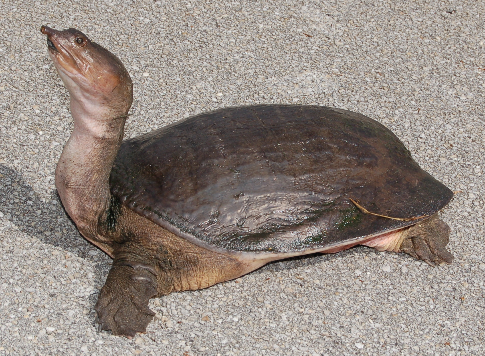
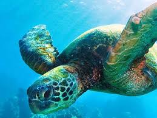

1. They think jellyfish are delicious. Leatherbacks and hawkbill turtles feed on jellyfish and keep their populations in check. Plastic looks like jellyfish when it's floating in the water and that's why so many turtles die from ingesting plastic—they were going for a tasty snack.
2. They're the oceans' lawnmowers. Green sea turtles have a more plant-based diet and eat seagrass. By keeping seagrass short, they prevent it from getting tall and harming other marine creatures.
3. They cannot retract into their shell like other turtles. Since they don't have to protect themselves from predators for most of their life on water, sea turtles cannot retract their flippers and head into their shells. Their anatomy makes them more agile when under the sea but highly vulnerable when nesting and hatching.
4. Temperature dictates the sex of baby turtles. Warmer nests lead to more females and cooler ones lead to more males—which is why climate change could drastically affect their populations by creating too many females and too few males to match them for reproduction.
5. They've been around for a very, very long time. An estimated 110 million years is how long sea turtles have existed on Earth, which means they once shared the planet with T-Rex and other dinosaurs.
6. They can hold their breath for five hours underwater. To accomplish this mighty feat they slow their heart rate to up to nine minutes in between heart beats in order to conserve oxygen.
7. They live to about 100 years. And that's also roughly the amount of eggs they lay every time they nest.
8. Dogs are not a sea turtle's best friend. Even though they're marine animals, some of their natural predators include dogs who dig up their eggs buried in the sand.
9. They have an excellent sense of direction. Sea turtles can detect the Earth's magnetic field and they use it as a compass.
This is a soft shell turtle. He is ugly but still a turtle
The Problem: Human use of nesting beaches can result in negative impacts to nesting turtles, incubating egg clutches and hatchlings. The most serious threat caused by increased human
presence on the beach is the disturbance to nesting females. Night-time human activity can prevent sea turtles from emerging on the beach or even cause females to stop nesting and return to the
ocean. Beach Furniture and other recreational equipment (e.g., cabanas, umbrellas, hobie cats, canoes, small boats and beach cycles) can reduce nesting success and increase false crawls on nestingbeaches. There is also increasing documentation of nesting females becoming entrapped in beach furniture. Beach Driving, either at night or during the daytime, can negatively impact sea turtles.
Night time driving can disturb nesting females, disorient emerging hatchlings, and crush hatchlings attempting to reach the ocean. Tire ruts left by vehicles can extend the time it takes a hatchling to reach the ocean and increase their chance of being caught by a predator. Driving during the day can cause sand compaction above nests resulting in lower nest success. Additionally, beach drivingcontributes to erosion, especially during high tides or on narrow beaches.
Click on this video to see some cute turtle action
* Don’t drive on sea turtle nesting beaches;
* Make sure to fill in any holes you dig while visiting the beach ;
* Remove any beach chairs, beach umbrellas, boats, or other beach furniture each evening;
* Avoid disturbing marked sea turtle nests, and take your trash with when you leave the beach.
Case Study: There are a few studies that have looked at the direct effects of beach driving on sea turtles, and those studies support the contention that unrestricted beach driving will hinder sea turtle conservation efforts. Sand compaction from driving above a nest can decrease nesting success and kill hatchlings. Tire tracks could significantly impede a hatchling’s ability to reach the surf. A study conducted at Cape Hatteras and Cape Lookout concluded that driven beaches have higher percentages of false crawls and lower incubation temperatures, possibly resulting in a lower percentage of female hatchlings. The relationship between incubation period and sex ratio was determined using models for the southeastern United States. There are numerous possibilities for indirect and direct effects of beach driving on sea turtle populations. The Loggerhead Recovery Plan lists several of these effects including: disturbing nesting females, aborting nesting attempts, and disorienting hatchlings. In addition, beach driving contributes to erosion, which will eventually deteriorate the quality and quantity of nesting habitats. Increased human use and the resulting increase in sand compaction have been shown to decrease hatching success.